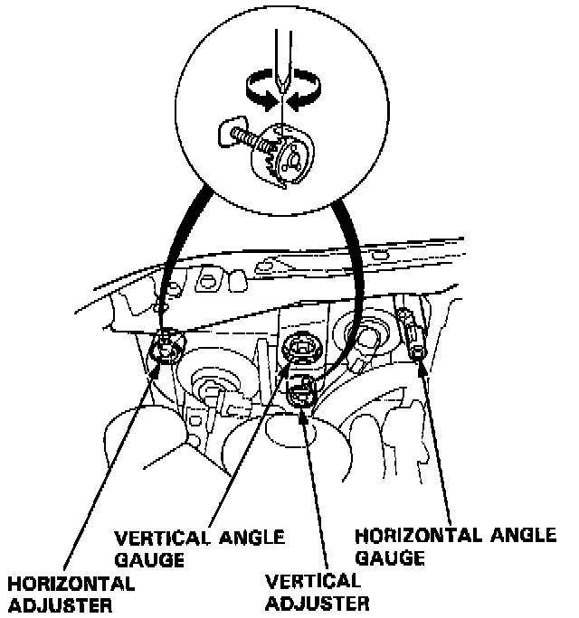
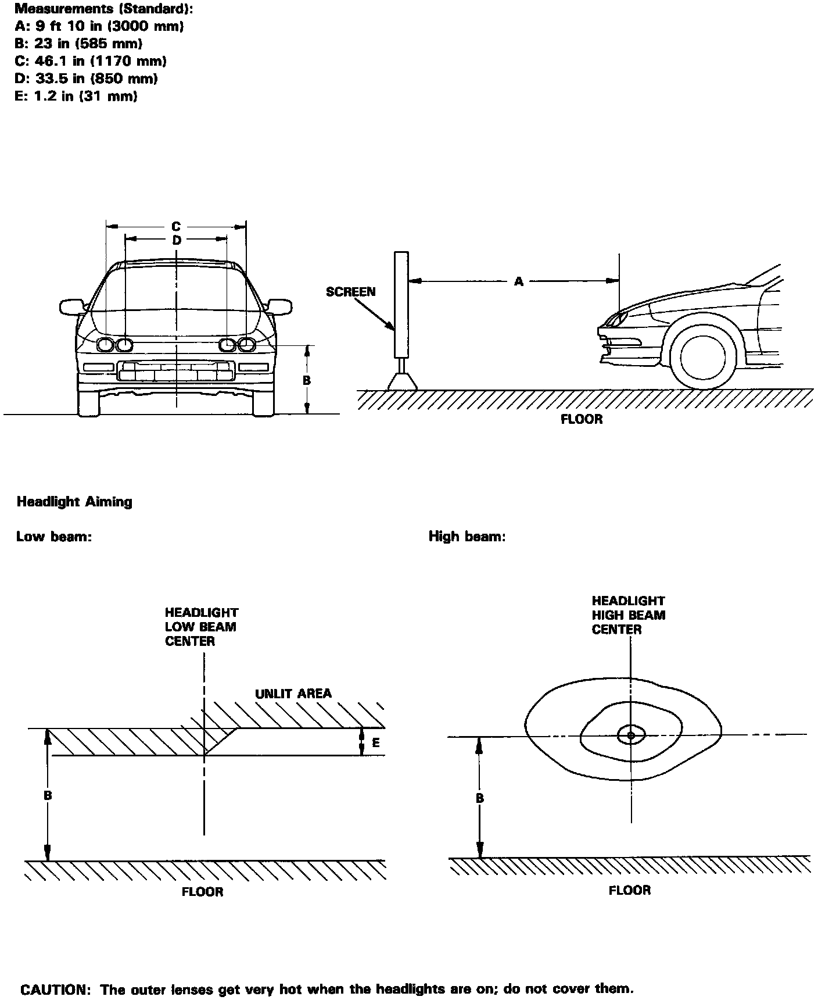
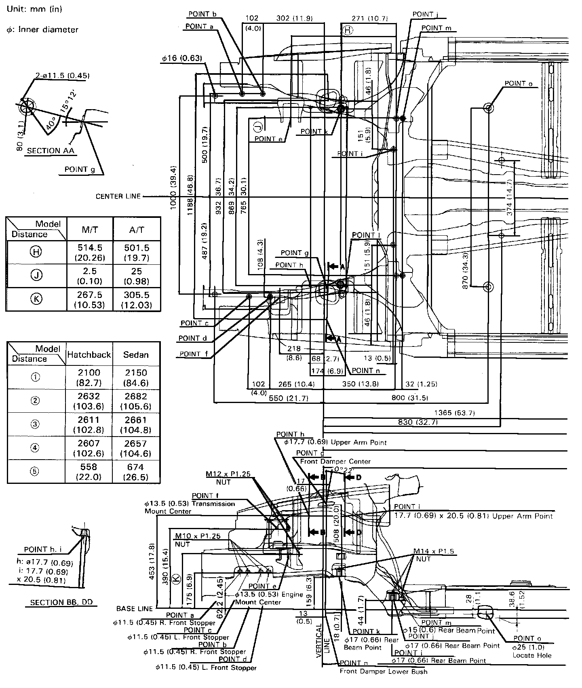
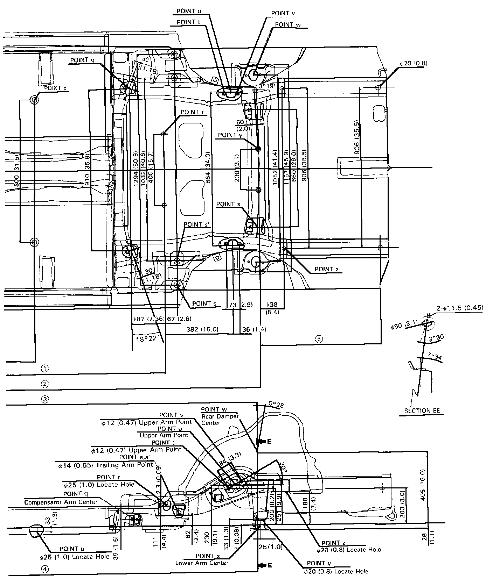
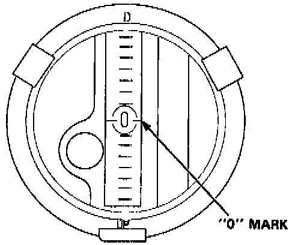
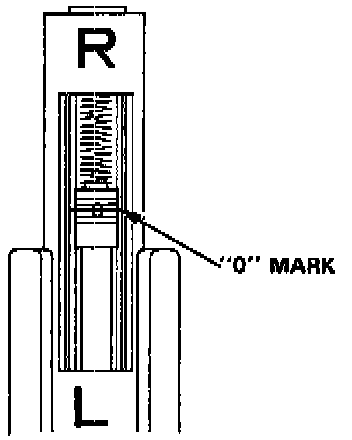

Headlamp: Adjustments
HEADLIGHT / ADJUSTMENT
Before adjusting the headlights:
- Park the car on level ground.
- Make sure the fuel tank is full.
- The driver or someone who weighs the same should sit in the driver's seat.
- Load the trunk with the items you usually carry (if you usually pull a trailer, attach it to the car).
- Push down on the front and rear bumpers several times to make sure the car is sitting normally.

- When installing a new headlight assembly, tighten the four mounting bolts so that the indicator in the vertical gauge comes to the "0" mark.
1. Open the hood.
2. Check that both the horizontal and vertical gauge read "0".
Aiming Chart:

Frame Repair Chart (1 Of 2):

Frame Repair Chart (2 Of 2):

- If the gauges read "0", check headlight aiming with the aiming chart (If aiming isn't correct, refer to the frame repair chart.
- If one or both gauges don't read "0", go to step 3.

3. Turn the low beams on. If necessary, align the vertical indicator with its "0" mark by turning the vertical adjuster with a Phillips screwdriver, and check aiming with the chart.

4. If necessary, align the horizontal indicator with its "0" mark by turning the horizontal adjuster with a Phillips screwdriver, and check aiming with the chart.
5. Recheck that the vertical indicator bubble is aligned with "0" ± 1.
If necessary, adjust as described in step 3.
Aiming Chart:
6. Turn the high beams on and check aiming with the charts.